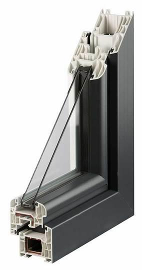
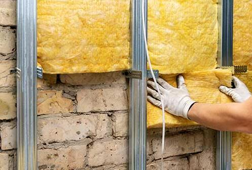
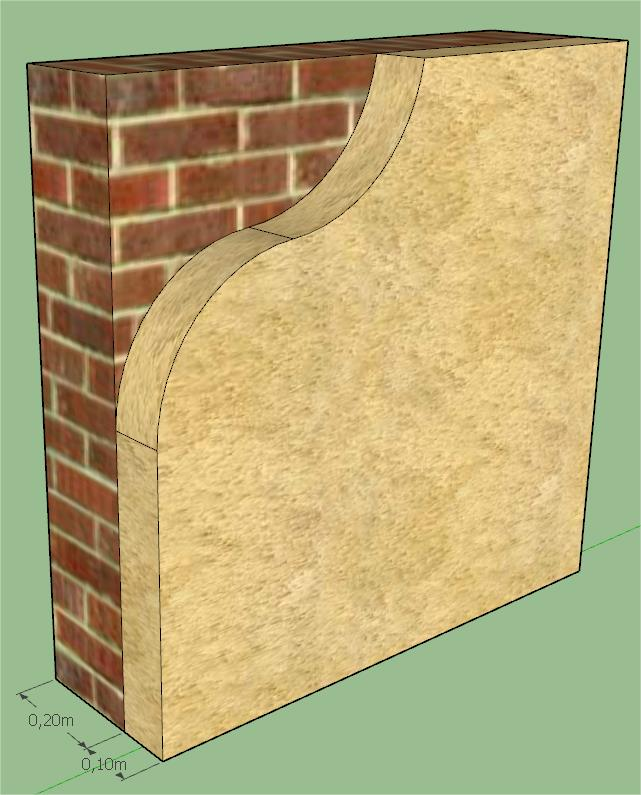
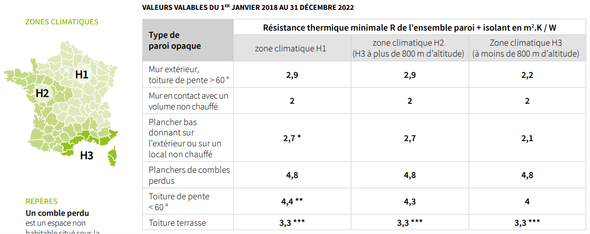
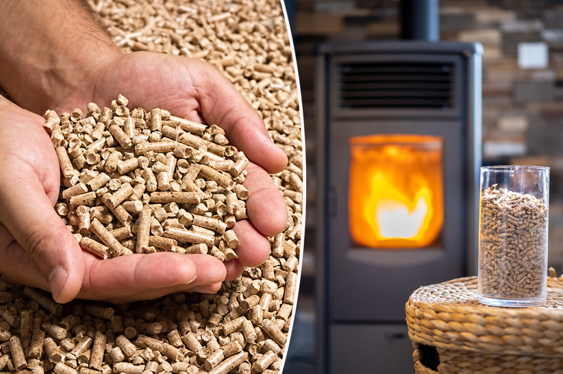
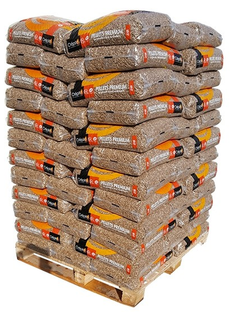

07 Séquence A · Activité 07
Étude thermique
Étudier le vitrage et l’isolation de votre habitation, puis dimensionner un poêle à granules.
Étudier le vitrage et l’isolation de votre habitation, puis dimensionner un poêle à granules.

O1 - Caractériser des produits ou des constituants privilégiant un usage raisonné du point de vue développement durable.
CO1.1. Justifier les choix des structures matérielles et/ou logicielles d’un produit, identifier les flux mis en œuvre dans une approche de développement durable.
O3 - Analyser l’organisation fonctionnelle et structurelle d’un produit.
CO3.4. Identifier et caractériser des solutions techniques.
Utilisation des fiches-outil du dossier « Fiche outils Logiciels » : « Fiche outils Excel » et « Fiche Outils Sketchup - Dessiner un mur »
Utilisation des fiches-outil du dossier « Fiche outils Habitation » : « Comment choisir son poêle à granules »
Vous allez avoir besoin des informations de votre habitation suivantes :

Q1 : à l’aide d’Internet, trouvez 3 types de vitrages différents. Insérez les photos, noms et UG ci-dessous en les classant du moins isolant au plus isolant.
| Moins isolant → Plus isolant | ||
|---|---|---|
| Nom : | — | — |
| Photo : | — | — |
| UG (W/(m².K)) : | — | — |
Q2 : d’après vos recherches, concluez sur l’efficacité thermique de vos vitrages.

Q3 : à l’aide du logiciel Sketchup (installé ou en ligne), dessinez 1 m² de votre mur (porteur + isolant). La fiche-outil « Fiche Outils Sketchup - Dessiner un mur » vous montre ce qu’on attend de vous. Dans le cadre ci-dessous, remplacez l’image exemple par votre mur.
Calculez la résistance thermique de votre mur grâce aux formules. Recherchez les conductivités thermiques de vos matériaux par exemple sur un site spécialisé ou en tapant « conductivité thermique nomdumatériau » sous Google.
| Nom du matériau | Conductivité thermique W/(m.K) | Épaisseur m | Résistance thermique m².K/W |
|---|---|---|---|
| — | — | — | — |
| — | — | — | — |
| Résistance totale du mur (m².K/W) : |

Calculez la résistance thermique de votre plafond et de votre sol grâce aux formules. Recherchez les conductivités thermiques de vos matériaux par exemple sur un site spécialisé ou en tapant « conductivité thermique nomdumatériau » sous Google.
| Nom du matériau du plafond | Conductivité thermique W/(m.K) | Épaisseur m | Résistance thermique m².K/W |
|---|---|---|---|
| — | — | — | — |
| — | — | — | — |
| Résistance totale du plafond (m².K/W) : |
| Nom du matériau du sol | Conductivité thermique W/(m.K) | Épaisseur m | Résistance thermique m².K/W |
|---|---|---|---|
| — | — | — | — |
| — | — | — | — |
| Résistance totale du sol (m².K/W) : |
D’après l’ADEME, les exigences de la RT2012 en rénovation sont les suivantes :

Q5 : d’après vos résultats et le tableau ci-dessus, concluez quant à l’efficacité de vos murs, plafonds et plancher bas.

Vous désirez modifier votre installation de chauffage pour vous chauffer avec un poêle à granules (voir documents techniques en annexe). Nous considérons dans notre étude que votre logement est isolé selon la norme RT 2012.

La palette de 66 sacs de 15 kg est plus près de votre lieu de stockage (comme votre garage ou votre abri de jardin) grâce à un transpalette électrique tout terrain.
Dimensions de la palette de granulés : 80 x 120 x 180 cm ou 100 x 100 x 180 cm selon la région.
Ce site a été réalisé par Abdellah CHELOUAH.